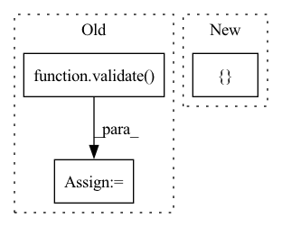

Pattern ID :38140
Before Change
// evaluate on test set
model.load_state_dict(torch.load(logger.get_checkpoint_path("best")))
print("Test on target domain:")
_, test_mAP = validate( test_loader, model, target_dataset.query, target_dataset.gallery, device,
cmc_flag=True, rerank=args.rerank)
print("test mAP on target = {}".format(test_mAP))
logger.close()
After Change
if (epoch + 1) % args.eval_step == 0 or (epoch == args.epochs - 1):
// remember best mAP and save checkpoint
torch.save(
{
"model": model.state_dict(),
"epoch": epoch
} , logger.get_checkpoint_path(epoch)
)
print("Test on target domain...")
_, test_mAP = validate(test_loader, model, target_dataset.query, target_dataset.gallery, device,In pattern: SUPERPATTERN
Frequency: 4
Non-data size: 3
Instances Fragment ID: 109338308
Project Name: thuml/transfer-learning-library
Commit Name: 91cc646b6e3c004ef8e2aba07ee26ef7b652116f
Time: 2021-09-03
Author: chenbx18@mails.tsinghua.edu.cn
File Name: examples/domain_adaptation/reid/baseline_cluster.py
M Class Name: AnonimousClass
N Class Name: AnonimousClass
M Method Name: main(1)
N Method Name: main(1)
M Parent Class:
N Parent Class:
M File Name: examples/domain_adaptation/reid/baseline_cluster.py
N File Name: examples/domain_adaptation/reid/baseline_cluster.py
M Start Line: 37
M End Line: 156
N Start Line: 89
N End Line: 162
Before Change
torch.save(pretrained_model.state_dict(), args.pretrain)
// show pretrain result
pretrain_acc = validate( val_loader, pretrained_model, args)
print("pretrain_acc1 = {:3.1f}".format(pretrain_acc))
checkpoint = torch.load(args.pretrain, map_location="cpu")
classifier.load_state_dict(checkpoint)After Change
train_source_dataset, train_target_dataset, val_dataset, test_dataset, num_classes = \
utils.get_dataset(args.data, args.root, args.source, args.target,
train_transform, val_transform, MultipleApply([ train_transform, val_transform Fragment ID: 109338304
Project Name: thuml/transfer-learning-library
Commit Name: ac06563cc969a7128fe67f950eafea6c805ef10d
Time: 2021-07-26
Author: 13126830206@163.com
File Name: examples/domain_adaptation/classification/self_ensemble.py
M Class Name: AnonimousClass
N Class Name: AnonimousClass
M Method Name: main(1)
N Method Name: main(1)
M Parent Class:
N Parent Class:
M File Name: examples/domain_adaptation/classification/self_ensemble.py
N File Name: examples/domain_adaptation/classification/self_ensemble.py
M Start Line: 66
M End Line: 169
N Start Line: 51
N End Line: 160
Before Change
// evaluate on test set
classifier.load_state_dict(torch.load(logger.get_checkpoint_path("best")))
acc1 = validate( test_loader, classifier, args)
print("test_acc1 = {:3.1f}".format(acc1))
logger.close()
After Change
else:
raise NotImplementedError(args.regularization_type)
head_regularization = L2Regularization(nn.ModuleList([ classifier.head, classifier.bottleneck Fragment ID: 109338300
Project Name: thuml/transfer-learning-library
Commit Name: ce38964ed6fc09262ae95c971acef5a616e106f1
Time: 2021-03-18
Author: 13126830206@163.com
File Name: examples-ft/classification/delta.py
M Class Name: AnonimousClass
N Class Name: AnonimousClass
M Method Name: main(1)
N Method Name: main(1)
M Parent Class:
N Parent Class:
M File Name: examples-ft/classification/delta.py
N File Name: examples-ft/classification/delta.py
M Start Line: 34
M End Line: 147
N Start Line: 33
N End Line: 122
Before Change
// evaluate on test set
model_1_ema.load_state_dict(torch.load(logger.get_checkpoint_path("best")))
print("Test on target domain:")
_, test_mAP = validate( test_loader, model_1_ema, target_dataset.query, target_dataset.gallery, device,
cmc_flag=True, rerank=args.rerank)
print("test mAP on target = {}".format(test_mAP))
print("oracle mAP on target = {}".format(best_test_mAP))
logger.close()
After Change
if (epoch + 1) % args.eval_step == 0 or (epoch == args.epochs - 1):
// save checkpoint and remember best mAP
torch.save(
{
"model_1": model_1.state_dict(),
"model_1_ema": model_1_ema.state_dict(),
"model_2": model_2.state_dict(),
"model_2_ema": model_2_ema.state_dict(),
"epoch": epoch
} , logger.get_checkpoint_path(epoch)
)
print("Test model_1 on target domain...")
_, test_mAP_1 = validate(test_loader, model_1_ema, target_dataset.query, target_dataset.gallery, Fragment ID: 109338298
Project Name: thuml/transfer-learning-library
Commit Name: 91cc646b6e3c004ef8e2aba07ee26ef7b652116f
Time: 2021-09-03
Author: chenbx18@mails.tsinghua.edu.cn
File Name: examples/domain_adaptation/reid/mmt.py
M Class Name: AnonimousClass
N Class Name: AnonimousClass
M Method Name: main(1)
N Method Name: main(1)
M Parent Class:
N Parent Class:
M File Name: examples/domain_adaptation/reid/mmt.py
N File Name: examples/domain_adaptation/reid/mmt.py
M Start Line: 39
M End Line: 164
N Start Line: 120
N End Line: 173